VPZ Research Center
| homeFelinez
All my breedz are proudly made from the original PFM breedz! "From scratch." ;-) Sounds I use are either in game, compiled by me, or from Carolyn, whose brilliance is a great inspiration, and her patience is astounding.
Do not directly link to my files, and if you distribute them, please give me credit. Breedz are grouped by wild and domestic and listed alphabetically.
.cat files need to go in ResourceCatz folder. The files are zipped, so you need an unzipping program such as WinZip to use them. You do not need any other breedz files or anything to use these. Sound files are available when possible. If sounds aren't available, they may be eventually, but the breed is currently silent (not cat/dog sounds). Some of the feline/canine breedz have internal sounds; others are soundstripped to keepthe files small (you can download the external sounds fromCarolyn's Creations.)
Breedz won't show up in the AC? The most common problem is that the Bunny.cat breed file was changed or deleted. (If you also have Dogz, you need the Pig.dog file too.) If you don't have these breedz in your game, the last ones in the Adoption Center won't show up. (Breedz are listed alphabetically, so the "VPZ" breedz tend to be the ones that drop off.) You need to either reinstall your game or download the Bunny (and/or Pig) from http://www.dmwright.com/petz/
***If only one file is available, it is a "unibreed" file that will work in Petz 3, 4, and 5!
If you have trouble downloading, right-click the link and choose "Save Target As..." All the files should work. (Although I can't verify Petz 3 or 4 downloads, since I don't use those games.) Sometimes files are interrupted in download, and you get corrupted messages, especially for large files and especially if you use dial-up. TRY AGAIN LATER.
| Domestic Catz |
|
Abyssinian (PKC, PKA, and VFS Accepted) 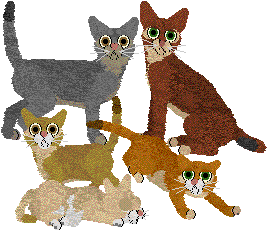 Download from Vickie's Show Breedz (internal sounds) |
|
American Bobtail (PKC and KCA Accepted) 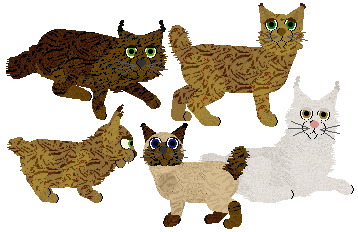 Download from Vickie's Show Breedz (internal sounds) |
|
Bengal (version 2) (PKC Accepted--ONLY V2) 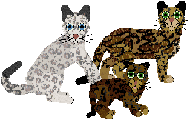 Drop tail code is from Marinsa, but modified. Long "uptail" is modified from ButterflyChaser's dog drop tail. Download from Vickie's Show Breedz (internal sounds) |
|
Cymric (PKC and VFS Accepted) 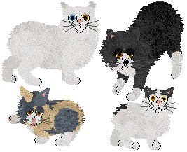 Download from Vickie's Show Breedz (internal sounds) |
|
Devon Rex (PKC, PKA, and VFS Accepted) 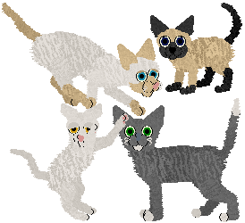 Download from Vickie's Show Breedz (internal sounds) |
|
Egyptian Mau PKC Accepted 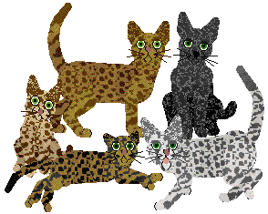 Download from Vickie's Show Breedz (Uses "egyptian mau" sounds from Carolyn's Creations.) |
|
Kurilian Bobtail (PKC Accepted) 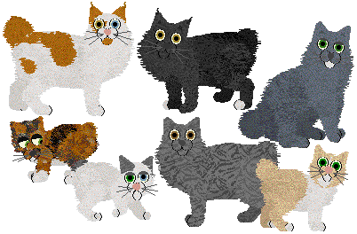 Download from Vickie's Show Breedz (internal sounds) |
|
Maine Coon (PKC, PKA, and VFS Accepted) 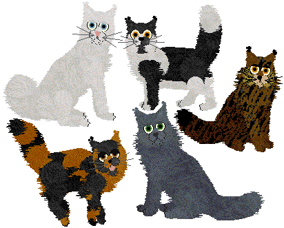
Overwriting files overwrite the original PF Magic Maine Coons. Non-Overwriting ones appear in the
Adoption Center as MaineC VPZ. Unzip the tabby fur files into the same folder as the breed. This
breed is PKC approved, but some types in the "Original File" are not accepted. Please download the
show files if you are interested in showing in that organization.
Original File (Contains all variations) Overwriting: *** Download *** Non-Overwriting: *** Download *** Special Show File (Contains only show variations) Download from Vickie's Show Breedz Tabby Fur Files (internal sounds) |
|
Maine Coon V2 (PKC Accepted) 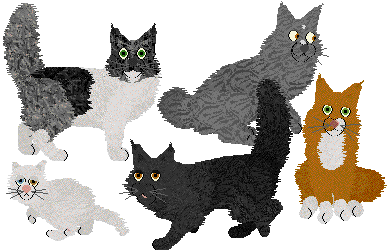 Download from Vickie's Show Breedz (internal sounds) |
Moggie
Moggie is the word given to mixed breed cats (just like "mutt" for dogz). Many people have known a
moggie or two or many, as these cats overpopulate pounds and shelters and are found as stray
kittens. A typical moggie always has its own unique look and personality, but is usually not extreme
in type (like persians and siamese) unless these breeds are not too far back in the family tree. In
this file, literally trillions of possibilities exist, as in real life, including polydactyls
(extra-toed catz) and blind catz. (You can see some examples of these variations here.) I recommend you do not search for a specific cat
but rather take whatever comes to you from the Adoption Center, like the cat you found in the alley
or the one that followed you home..
(Includes fur files from Rissa and L41N.) Pssst... if you like these, check out Nova's Mixed Breed for Dogz! *** Download *** (Uses "Calico" sounds from Carolyn's Creations.) |
|
Munchkin (PKC, PKA, and VFS Accepted) 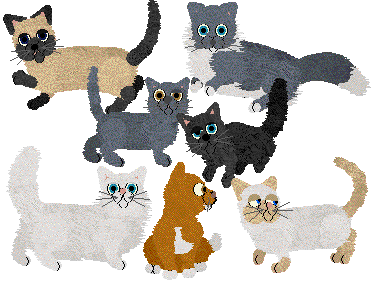 Download from Vickie's Show Breedz (internal sounds) |
|
Neko! (FKC Accepted) 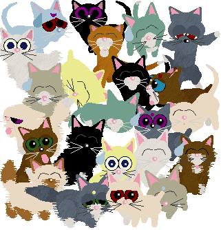 *** Download *** (internal sounds) |
|
Oriental Longhair PKC Accepted 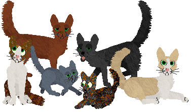 Download from Vickie's Show Breedz (internal sounds) |
|
Persian (non-overwriting) (PKA and VFS Accepted--except the rainbow ones of course) Version 2 are smaller with more realistic colors. 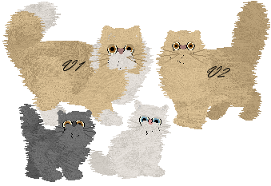 V1: Solid/Bicolor: *** Download *** V1: Harlequin: *** Download *** V1: Himalayan: *** Download *** V1: Smoke: *** Download *** V2: Solid/Bicolor: *** Download *** V2: Harlequin: *** Download *** V2: Himilayan: *** Download *** Mini Rainbow: *** Download *** Tortie Fur File (internal sounds) |
|
Ragdoll (PKC Accepted) 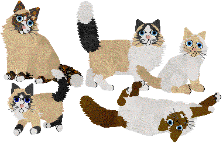 Download from Vickie's Show Breedz (Uses "chinchilla persian" sounds from Carolyn's Creations.) |
|
Singapura (PKC Accepted) 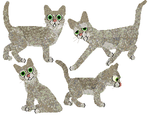 Download from Vickie's Show Breedz (internal sounds) |
|
Sphynx (PKC, PKA, and VFS Accepted) 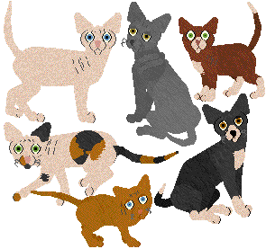 Download from Vickie's Show Breedz (internal sounds) |
|
Sweet Stray Kittenz 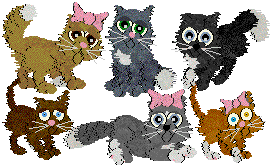 *** Download *** (internal sounds) |
|
Tiffanie (PKC Accepted) 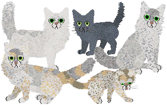 Download from Vickie's Show Breedz (internal sounds) |
|
Turkish Angora (PKC Accepted) 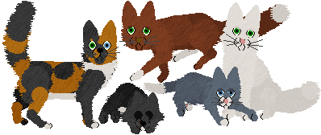 Download from Vickie's Show Breedz (internal sounds) |
|
York Chocolate (PKA and VFS Accepted) 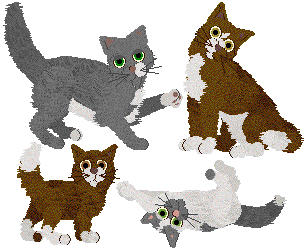 *** Download *** (internal sounds) |
| Wild Catz |
|
Bobcat (PKA Accepted) 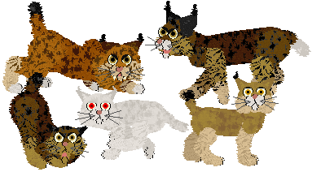 Drop tail code is from Marinsa, but modified. Works in all games, thanks to Minibyte fixing the fur files! *** Download *** (Uses "alley cat" sounds from Carolyn's Creations.) |
|
Ocelot (PKA, WKC, VFS Accepted) 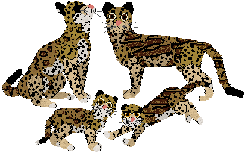 Drop tail code is from Marinsa, but modified. *** Download *** (internal sounds) |
|
Mountain Lion aka Puma aka Cougar (PKA and VFS Accepted) VERSION 2 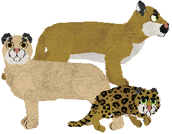 Drop tail code is from Marinsa, but modified. *** Download *** |
|
Pallas Cat (PKA, WKC and VFS Accepted) 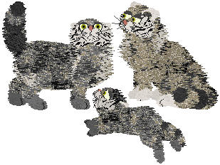 *** Download *** (Uses "Russian Blue" sounds from Carolyn's Creations.) |